Desde hace más de 30 años, nuestra familia se ha dedicado a preservar la tradición de hacer tortillas artesanales. Con el paso del tiempo, hemos incorporado tecnología moderna sin perder la esencia del sabor tradicional que nos caracteriza.
La tradición del sabor ahora en tu celular
Ordena tortillas recién hechas sin hacer fila y recógelas cuando estén listas
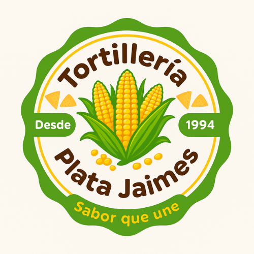
Características de la App
Ordena sin hacer fila
Realiza tu pedido desde donde estés y recógelo cuando esté listo
Historial de compras
Consulta tus pedidos anteriores y repite tus favoritos con un clic
Escaneo QR
Recoge tu pedido rápidamente escaneando tu código QR único
Nuestros Productos
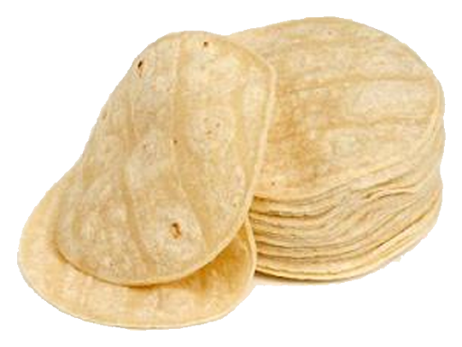
Tortillas de Maíz
Tortillas tradicionales hechas con maíz nixtamalizado
$27.00 / kg
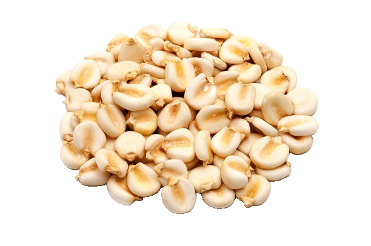
Nixtamal
Maíz cocido con cal que mejora sabor, nutrición y textura
$16.00 / kg
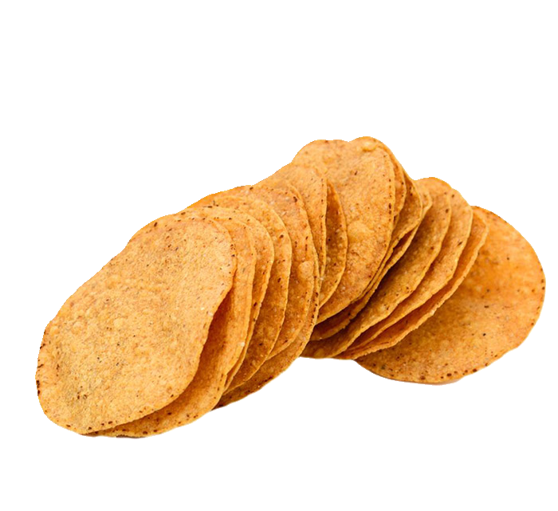
Tostadas
Crujientes y doradas, para cualquier antojo
$30.00 / do
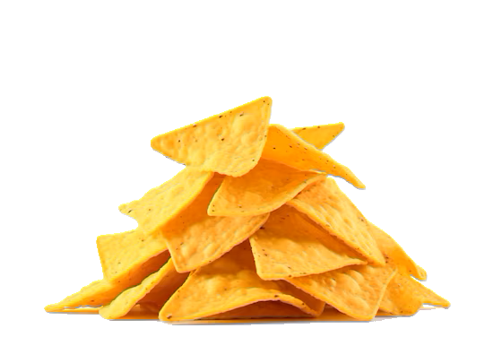
Totopos
Crujientes y deliciosos, ideales para botanear o acompañar tus comidas
$17.00 / kg
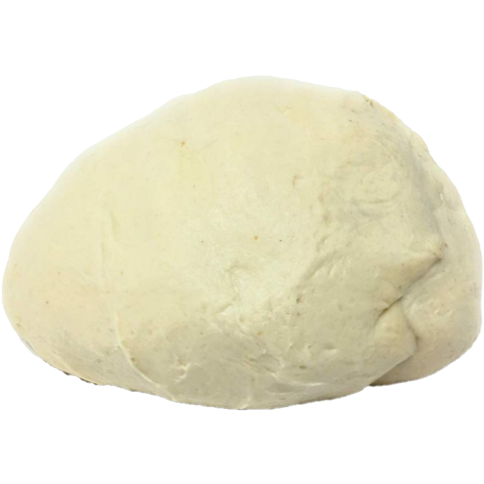
Masa
Preparada diariamente, lista para que hagas tus propios antojitos en casa
$20.00 / kg
Nuestra Tortillería
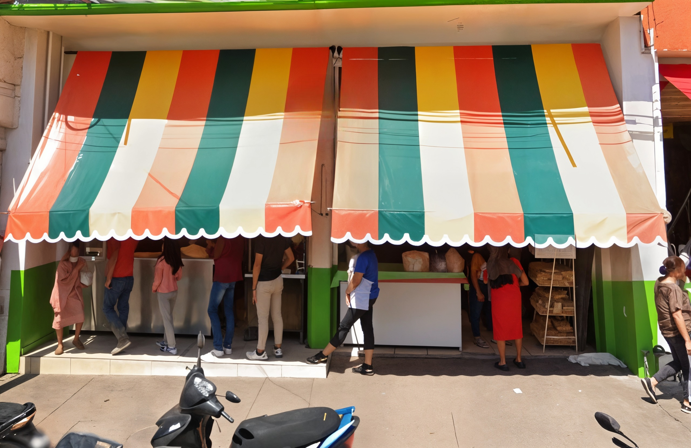
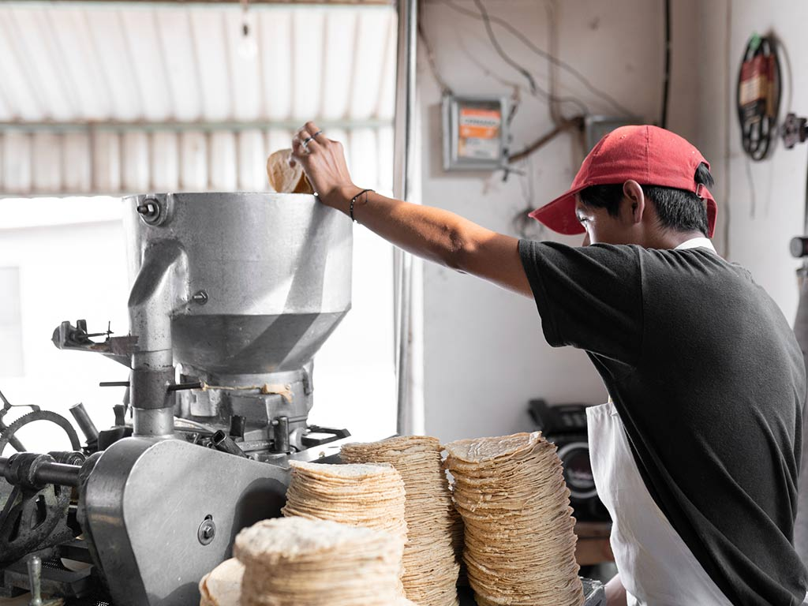
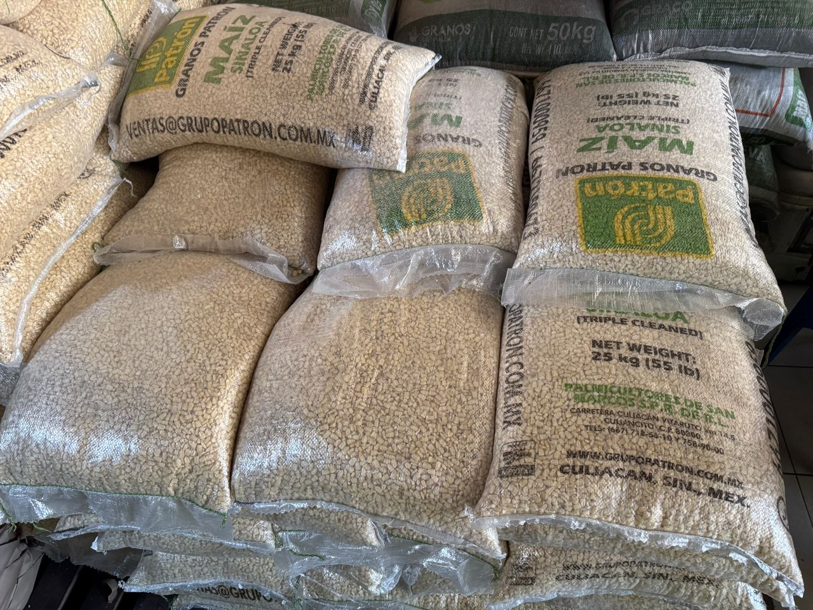
Ubicación
Nuestros Proveedores
Trabajamos con los mejores para garantizar la calidad
Maíz Orgánico Nacional
Nuestro maíz proviene directamente de agricultores de Sinaloa y Guerrero. Utilizamos tanto maíz tornado como criollo, asegurando un sabor auténtico, buena textura y un alto valor nutricional en nuestras tortillas.

Maquinaria Selorio
Toda nuestra maquinaria es proporcionada por la empresa Selorio, especialista en equipos industriales para el proceso de nixtamalización, prensado y cocción de tortillas.
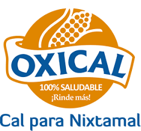
Cal Tradicional
Utilizamos cal de grado alimenticio adquirida de proveedores certificados, garantizando un proceso de nixtamalización limpio y seguro.
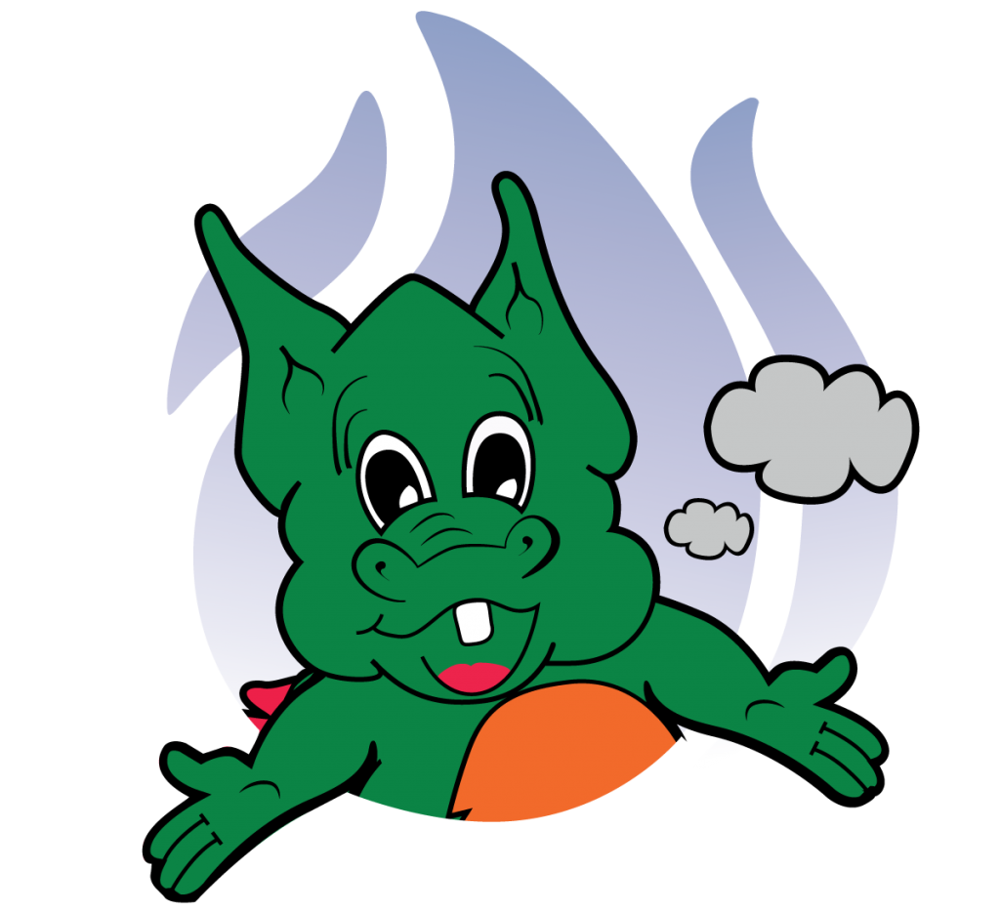
Gas Imperial
Trabajamos con Gas Imperial como proveedor de gas LP, asegurando un suministro constante y seguro para nuestras operaciones diarias.

Mi Sur
Para la elaboración de nuestras tostadas y totopos, contamos con el respaldo de Mi Sur, un proveedor reconocido por la calidad y sabor de sus productos derivados del maíz.
Nuestra Historia
¿Listo para probar la experiencia?
Descarga la app y disfruta de tortillas frescas sin esperas